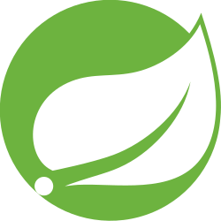
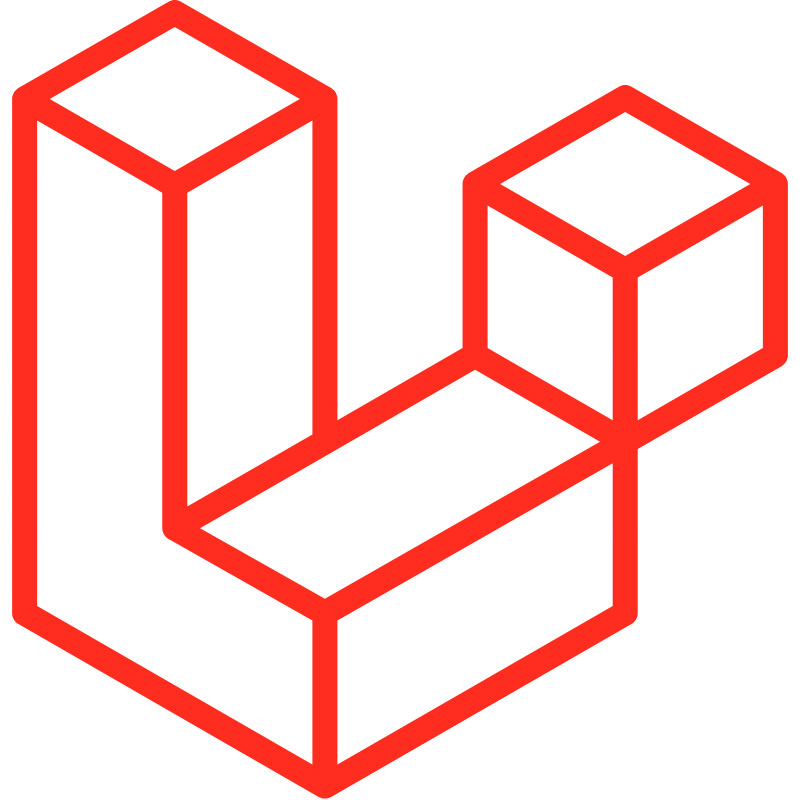
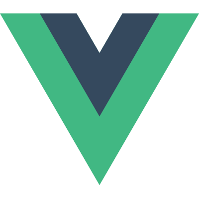
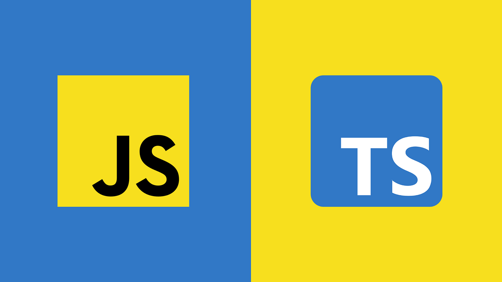
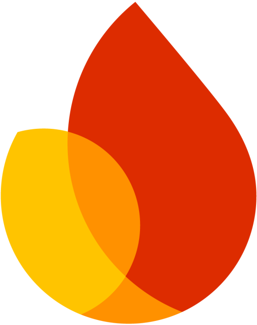
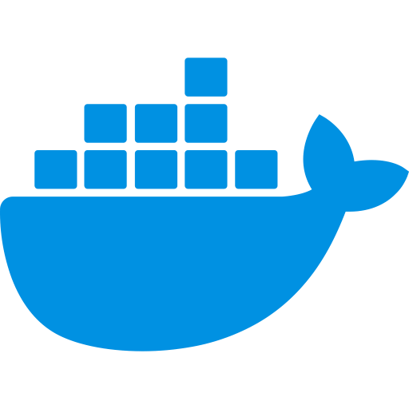
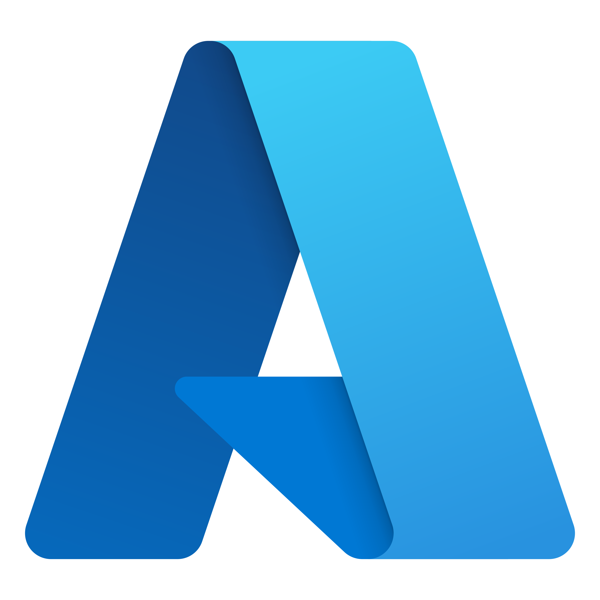
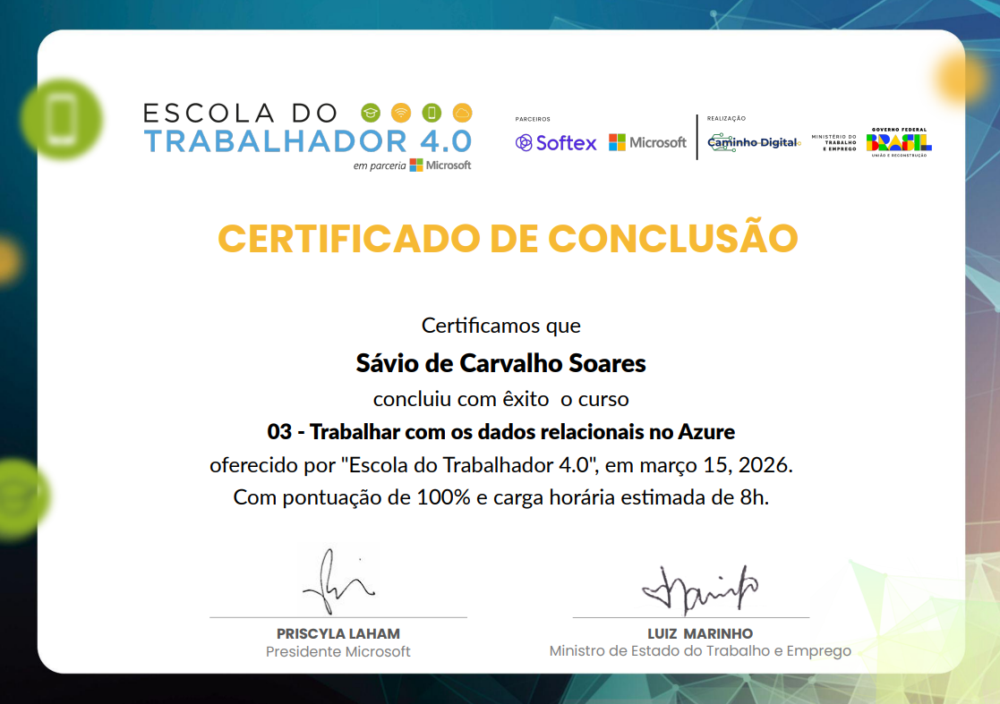
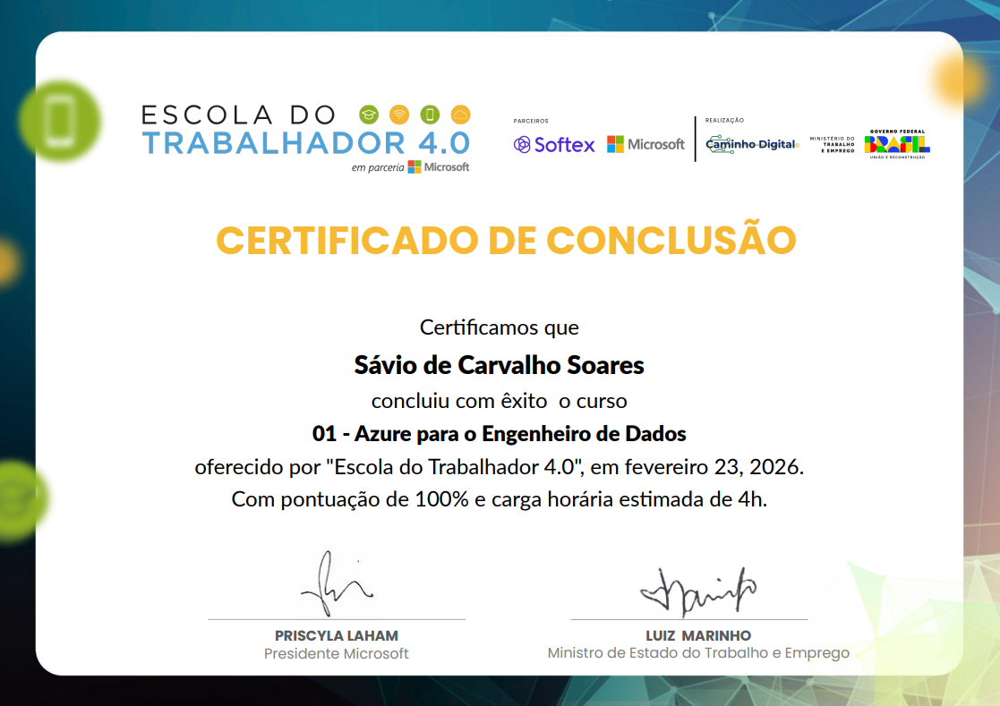

Engenheiro de Software
Olá, eu sou Sávio, apaixonado por construir soluções robustas.
Com 5+ anos de experiência no ciclo completo de desenvolvimento, minha missão é transformar ideias complexas em código limpo, eficiente e de alto impacto. Sou especialista em arquitetura de microsserviços e desenvolvimento Full-Stack, focado em entregar valor contínuo através da inovação e excelência técnica.
Minhas Hard Skills

Spring
APIs Escaláveis JAVA
Laravel
Framework PHPNode.js
Framework JavaScriptNext.js
Framework React
Vue.js
Framework TypescriptReact/RN
Interfaces ModernasKotlin
Desenvolvimento Android
JS/TS
Back/Front-endC/C++
Linguagens de Baixo NívelSQL/NoSQL
Modelagem de DadosPostgreSQL
Banco de DadosMongoDB
Banco de Dados
Firebase
Backend as a ServiceTestes
TDD/BDD & QARabbitMQ
Queue & Mensageria
Docker
ContainerizaçãoKubernetes
Container OrquestraçãoAWS
Cloud & Deploy
Azure
Cloud ComputingGCP
Google Cloud PlatformExperiência Profissional e Formação
Jan 2023 – Dez 2026 (Previsão)
Graduação em Engenharia de Software
UFC (Universidade Federal do Ceará - Campus Quixadá)Minha formação é focada na aplicação prática de metodologias e arquitetura de sistemas, preparando-me para todo o ciclo de vida do software, desde a concepção até a entrega e manutenção.
Engenharia e Qualidade de Software
Disciplinas que formam a espinha dorsal da minha carreira, garantindo que os projetos não sejam apenas funcionais, mas sustentáveis, escaláveis e de alta qualidade:
Desenvolvimento e Arquitetura
Foco no código limpo e na infraestrutura robusta, abrangendo desde o backend até a experiência do usuário final:
Fundamentos e Inovação
Base matemática e teórica, além de contato com áreas avançadas:
Abr 2026 – Atualmente
Pesquisador Bolsista e Desenvolvedor Node.js
FASTEF em parceria com Akiyama- Pesquisa, arquitetura e desenvolvimento de uma plataforma biométrica facial de ponta baseada em Microsserviços (Detecção, Vivacidade, Reconhecimento, Orquestração e Auditoria), sob contratos de interface rigorosos.
- Otimização algorítmica profunda para dispositivos embarcados de borda (Edge Computing), minimizando latência e viabilizando a autenticação em equipamentos críticos com altas restrições de hardware.
- Desenvolvimento de mecanismos dinâmicos avançados para Verificação de Vivacidade (Liveness / Anti-spoofing) e rastreamento contínuo, blindando o sistema computacional contra ataques de apresentação biométrica (uso de fotos, vídeos, máscaras, etc.).
- Tratamento resiliente de desafios óticos em cenários reais não controlados, superando intensas variações de luminosidade do sol, ruídos e oclusão facial (óculos de sol, bonés, barbas, entre outros).
- Construção integrada de microsserviços de Orquestração, Telemetria e Auditoria para escalar chamadas assíncronas, assegurando estabilidade em fluxos paralelos densos e suporte regulatório ao ecossistema.
- Testes, avaliação de desempenho e implementação ágil em ambiente validado visando atestar e transacionar o grau de maturidade de todo o pipeline biométrico até o patamar estratégico TRL 5–6.
Abr 2026 – Atualmente
Desenvolvedor de Software (Bolsista)
Odontuário- Engenharia e desenvolvimento de uma plataforma SaaS (Software as a Service) escalável, focada no gerenciamento inteligente de clínicas odontológicas.
- Adoção de Clean Architecture (Arquitetura Limpa) e princípios SOLID, assegurando alto desacoplamento, facilidade de expansão e testabilidade contínua.
- Projeto de APIs RESTful performáticas, com estratégias de cache para otimização e comunicação assíncrona, suportando alto volume de requisições simultâneas.
- Implementação de sincronia de dados em tempo real utilizando WebSockets para a atualização instantânea de agendas, prontuários eletrônicos e notificações de pacientes.
- Estruturação e manutenção de pipelines de integração e entrega contínuas (CI/CD), promovendo testes automatizados (Unitários e E2E) e deploys ágeis na nuvem corporativa.
Jan 2023 – Jan 2026
Engenheiro de Software Pleno
FUNCAP (Fundação Cearense de Apoio ao Desenvolvimento Científico e Tecnológico)- Liderança técnica (Tech Lead) e desenvolvimento de microsserviços e API REST utilizando Java/Spring Boot, garantindo alta disponibilidade para integração de serviços.
- Desenvolvimento Full-Stack com foco em interfaces de usuário modernas usando React e Next.js, aprimorando a experiência do usuário.
- Implementação e adesão à metodologia Scrum para entregas de valor contínuo e gestão transparente de projetos.
- Utilização de RabbitMQ para comunicação assíncrona (mensageria) e Git/GitHub para controle de versão e colaboração.
- Implementação de práticas de DevOps (Docker e CI/CD) para automatizar o deploy e reduzir o tempo de lançamento de novas funcionalidades.
- Atuação em todas as fases do ciclo de desenvolvimento, desde a decisão da arquitetura de sistema até o monitoramento em produção com AWS.
2022 – 2023
Desenvolvedor Front-end Júnior
EngStrategy- Minha primeira experiência profissional na área de desenvolvimento, onde tive o meu primeiro contato com Cliente Real.
- Responsável pela conversão de layouts em código HTML, CSS e JavaScript seguindo os padrões de acessibilidade.
- Gerenciamento de dados e lógica com Node.js.
- Colaboração em equipe ágil utilizando Scrum e práticas de Git Flow.
- Otimização de performance de carregamento, reduzindo o tempo de latência inicial.
2019 – 2021
Técnico em Informática
UFPI (Universidade Federal do Piauí)- Lógica de programação (Portugol)
- Programação orientada a objetos (Java)
- Desenvolvimento web (HTML/CSS, PHP)
- Bancos de dados (PostgreSQL)
- Segurança de Dados, Análise de Sistemas, Inglês Técnico e etc.
- Este foi o meu primeiro contato formal com a área de tecnologia.
Certificações

Microsoft Certified: Working with relational data in Azure
Microsoft
Conquistei a certificação 'Working with relational data in Azure', aprofundando meus conhecimentos em bancos de dados relacionais na nuvem. Durante o curso, aprendi a provisionar e gerenciar o Banco de Dados SQL do Azure, compreendendo os modelos de preços (DTU e vCore) e o uso do Azure Cloud Shell. Estudei a migração de dados com o Serviço de migração de banco de dados do Azure, explorei o Banco de Dados do Azure para PostgreSQL e a implementação de pools elásticos de SQL para otimizar desempenho e custos. Além disso, consolidei práticas de segurança como regras de firewall, autenticação, criptografia de dados e auditoria contra violações.
Microsoft Certified: Store Data in Azure
Microsoft
Conquistei a certificação 'Armazenar dados no Azure', consolidando meus conhecimentos em soluções de armazenamento na nuvem. Durante o aprendizado, explorei profundamente o Azure Storage, incluindo Blob, Table, Queue e File. Dominei a implementação de estratégias de segurança (como SAS), otimização de custos e a garantia de alta disponibilidade para aplicações. Este aprendizado é um passo fundamental para elevar a qualidade e escalabilidade das arquiteturas de software que desenvolvo.

Microsoft Certified: Azure Data Engineer Associate
Microsoft
Certificação focada na arquitetura e implementação de soluções de dados seguras e escaláveis utilizando os serviços de dados do Microsoft Azure. Competências consolidadas:
- Integração, transformação e consolidação de dados de sistemas estruturados e não estruturados.
- Criação de pipelines de processamento e análise de dados com Azure Synapse Analytics e Azure Data Factory.
- Gerenciamento de armazenamento seguro de dados no Azure Data Lake Storage.
- Monitoramento e otimização do processamento de dados para desempenho eficiente.
Manage Kubernetes in Google Cloud
Google Cloud Skills Boost
Selo de Especialista em Gestão de Kubernetes no Google Cloud. Um passo importante na jornada para dominar tecnologias de nuvem e orquestração de contêineres. Competências consolidadas:
- Configuração e implantação de clusters GKE com autoescalonamento.
- Implementação de monitoramento gerenciado com Prometheus e criação de métricas personalizadas baseadas em logs (Cloud Logging).
- Configuração de políticas de alertas para identificar falhas em Pods antes que afetem o usuário final.
- CI/CD e Conteinerização: Ciclo completo de build, push (Artifact Registry) e atualização gradual (Rolling Updates).